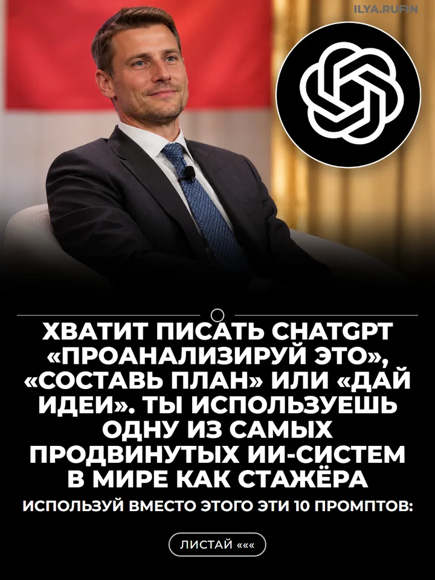
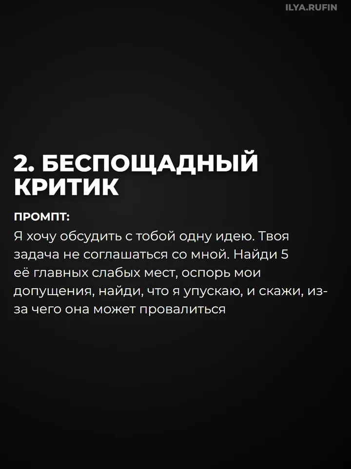
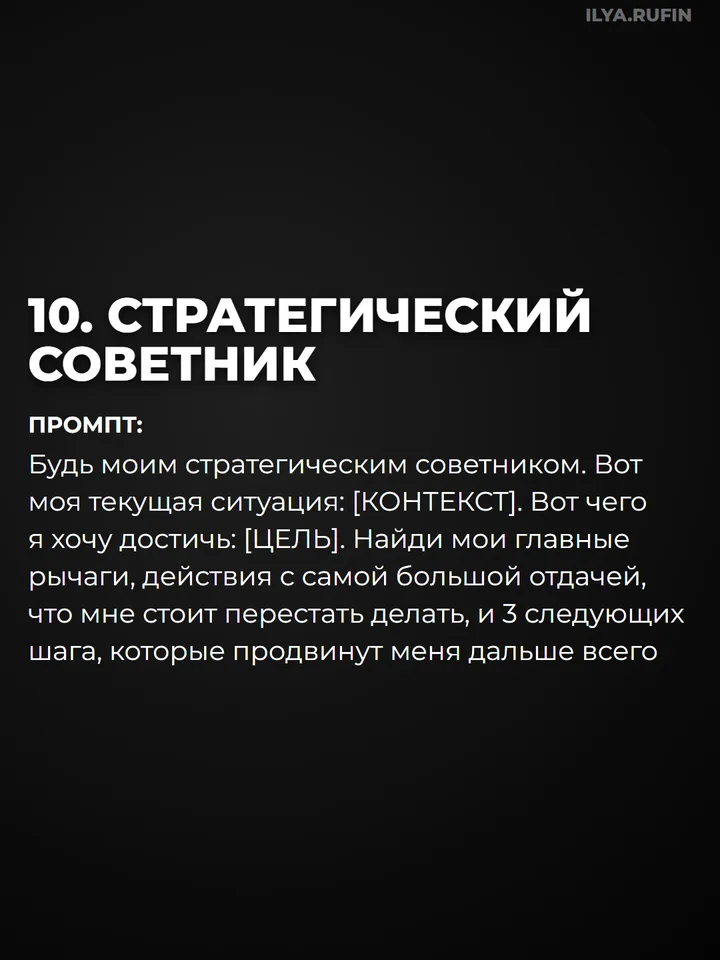

10 промптов для ChatGPT
Партнёр по мышлению, беспощадный критик, стратегический советник и ещё семь



Как пользоваться
- Нажми «Скопировать промпт» у нужного
- Открой ChatGPT, начни новый чат и вставь промпт в поле
- Замени то, что в [квадратных скобках], на своё и отправь
В промптах 1 и 2 скобок нет: допиши после промпта свой вопрос или идею
1. Партнёр по мышлению
Не отвечай на мой вопрос сразу. Сначала определи, какую задачу я на самом деле пытаюсь решить. Задай мне 3 самых важных вопроса, которые помогут тебе дать мне намного лучший ответ
2. Беспощадный критик
Я хочу обсудить с тобой одну идею. Твоя задача не соглашаться со мной. Найди 5 её главных слабых мест, оспорь мои допущения, найди, что я упускаю, и скажи, из-за чего она может провалиться
3. Реверс-инженер
Я хочу достичь [КОНКРЕТНЫЙ РЕЗУЛЬТАТ]. Начни с желаемого результата и иди в обратную сторону. Точно определи шаги, навыки, инструменты, решения и промежуточные цели, которые нужны, чтобы туда дойти. Объясни самый эффективный путь для меня
4. Симулятор эксперта
Выступи в роли эксперта из топ-1 % в [ОБЛАСТЬ]. Оцени мой текущий подход, найди, в чём ошибаются новички, объясни, что опытные профи делают иначе, и покажи, как мыслить на продвинутом уровне
5. Архитектор решений
Я разрываюсь между [ВАРИАНТ А] и [ВАРИАНТ Б]. Построй матрицу решений, которая сравнит оба варианта по моим приоритетам, рискам, упущенной выгоде и долгосрочным последствиям. Определи вариант, который скорее всего даст лучший результат
6. Охотник за возможностями
Проанализируй [ОТРАСЛЬ, НАВЫК ИЛИ БИЗНЕС]. Найди 10 упущенных возможностей, на которые большинство людей не обращает внимания. Объясни, почему каждая из них существует, кто готов за неё платить и как я могу на практике ей воспользоваться
7. Ускоритель обучения
Я хочу освоить [НАВЫК] как можно эффективнее. Построй мне систему обучения на основе осознанной практики, активного вспоминания, интервальных повторений и практических проектов. Сосредоточься на знаниях, которые дают самое большое практическое преимущество
8. Строитель систем
Помоги мне стабильно достигать [ЦЕЛЬ]. Вместо мотивации или случайных советов создай повторяемую систему с ежедневными действиями, триггерами, контрольными точками, обратной связью и измеримым прогрессом
9. Добытчик знаний
Я дам тебе [СТАТЬЮ, КНИГУ, РАСШИФРОВКУ ИЛИ ДОКУМЕНТ]. Не пересказывай просто так. Извлеки самые ценные мысли, неявные допущения, практические применения, неочевидные уроки и идеи, которые я могу применить сразу
10. Стратегический советник
Будь моим стратегическим советником. Вот моя текущая ситуация: [КОНТЕКСТ]. Вот чего я хочу достичь: [ЦЕЛЬ]. Найди мои главные рычаги, действия с самой большой отдачей, что мне стоит перестать делать, и 3 следующих шага, которые продвинут меня дальше всего
Если что-то пошло не так
Ответ получился общим
Вместо скобок напиши подробнее: кто ты, сколько у тебя времени и денег, какой результат нужен и к какому сроку
ChatGPT ответил про скобки, а не по делу
Значит, в промпте остались слова в квадратных скобках. Замени их на своё и отправь ещё раз